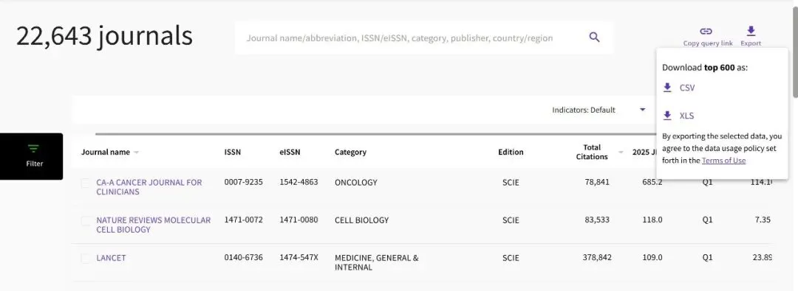
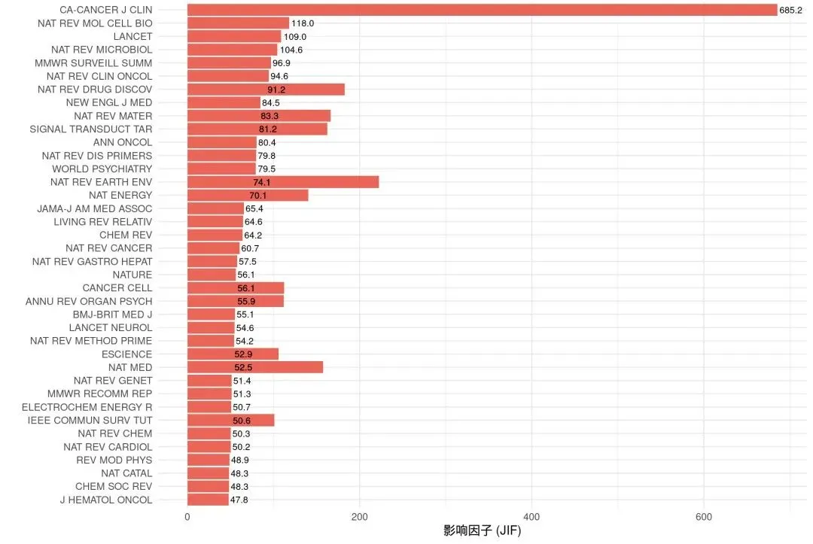
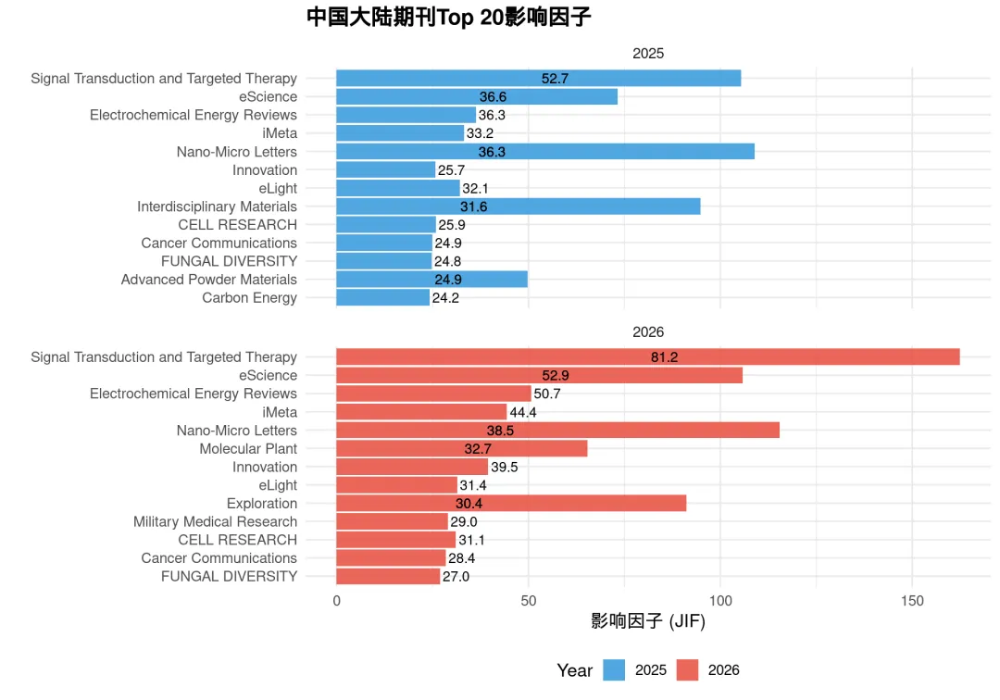
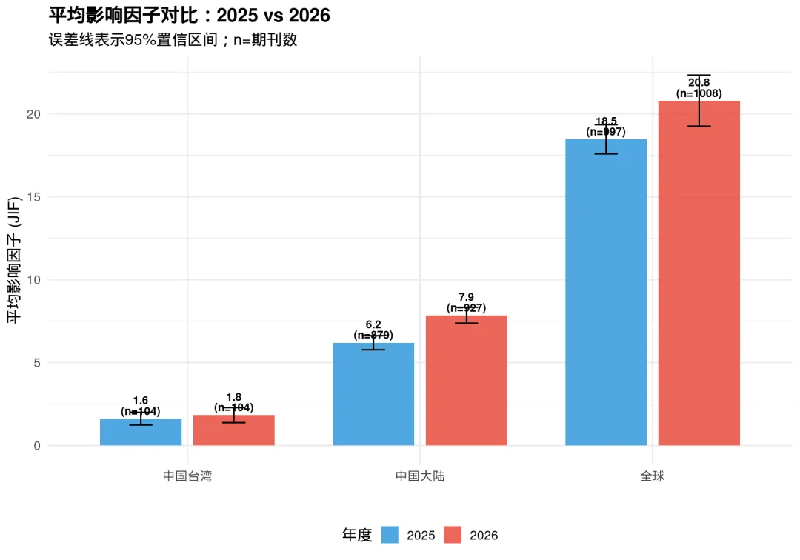
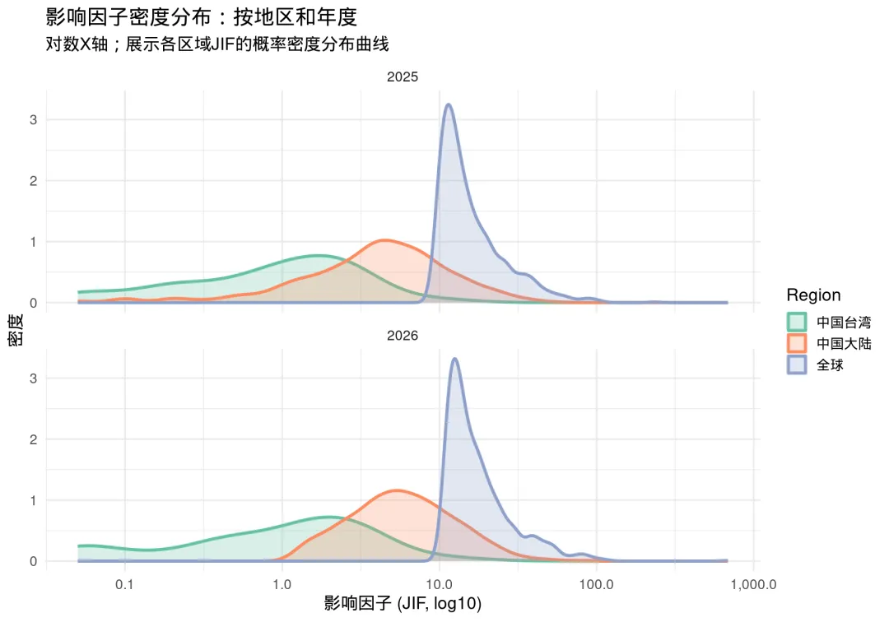
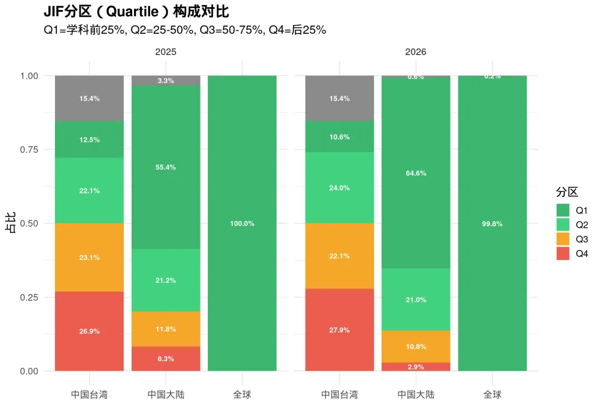
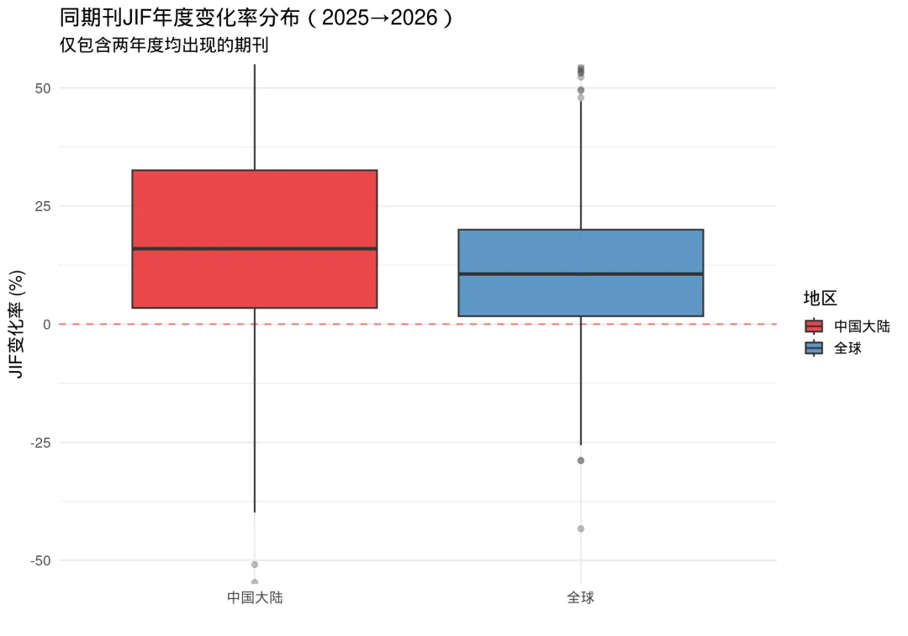
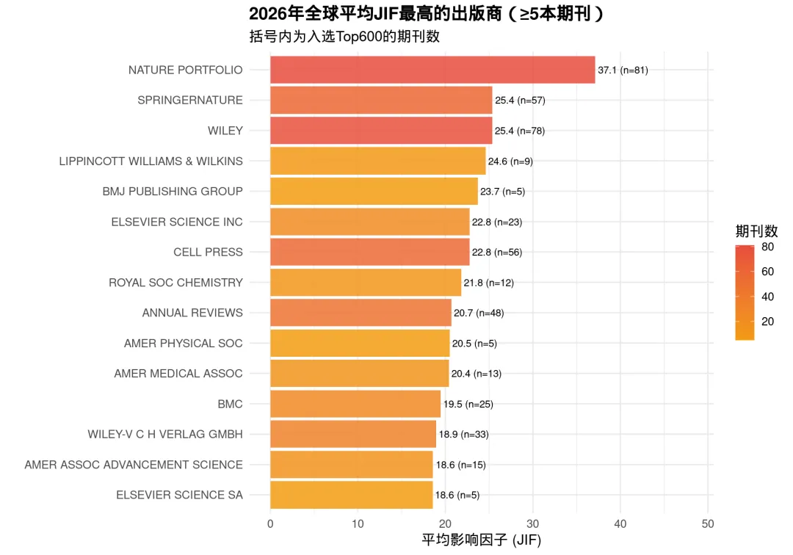
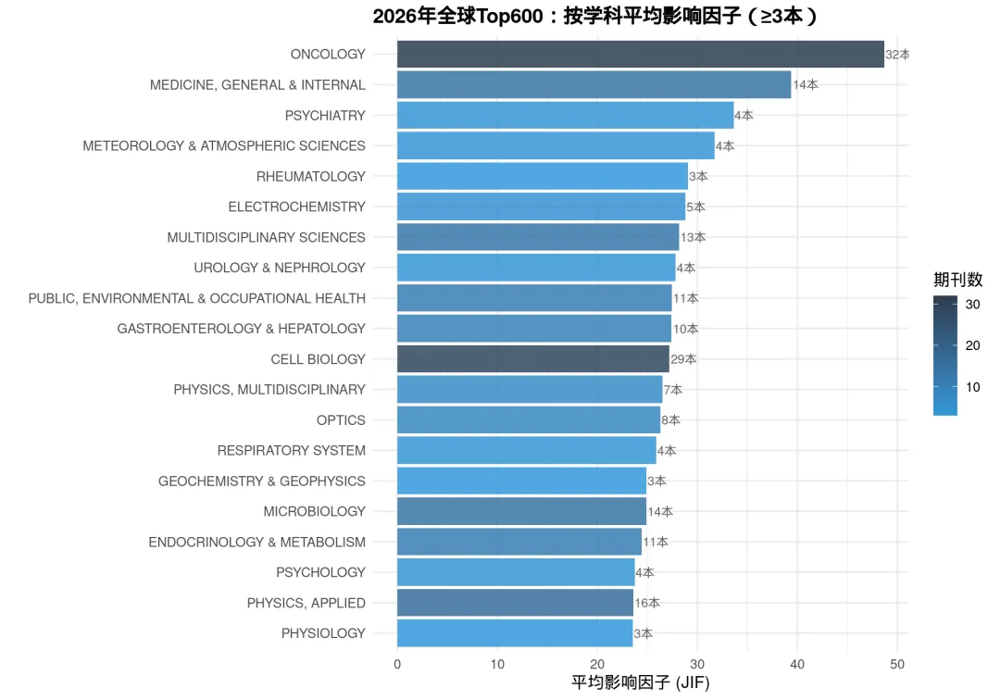
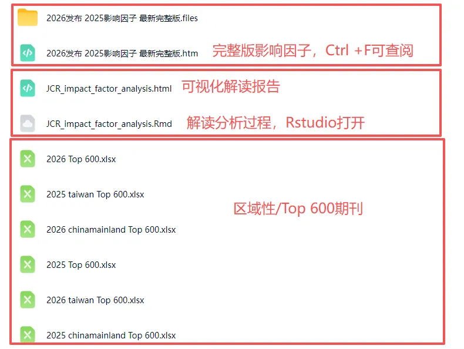

2026最新影响因子全列表，Ctrl+F可检索
原文：https://mp.weixin.qq.com/s?__biz=MzAwMzIzOTk5OQ==&mid=2247538839&idx=2&sn=2c79960bf56661465c918956440fe952&chksm=9b3c21c7ac4ba8d1f6baabb08de7045d344d4c4589da36d611397e5c06e4f64bc436c387a9fb#rd 合集：漫谈胡侃
奔走相告

今天最新发布的JCR影响因子发布了，国产期刊基本是普涨，自己努力不如期刊努力。我们初步分析了各地区top600期刊的影响因子。需要完整数据的同学可以添加客服微信[Biomamba_zhushou]，发送关键词"影响因子2026"获取下载链接。 全球最夯的40本期刊
国产期刊影响因子Top20的门槛已经高达24
国产大陆、中国台湾省、全球期刊的影响因子相较于2025年都在上升
可以看出，我们的平均影响因子还有进一步赶超空间

虽然咱们现在更看重中科院分区，JCR分区也值得参考：

两年内期刊的增幅也在10%以上：
从出版社视角来看，NATURE PORTFOLIO、SPRINGERNATURE、WILEY分别是前三甲。
按学科划分ONCOLOGY肿瘤领域的影响因子依旧遥遥领先：
如果需要单细胞数据分析教学、生信热点全文复现、自测数据个性化分析辅导、实验科研服务和常态化实验学习，欢迎联系客服微信[Biomamba_zhushou]。
文件下载
文件下载链接:
https://pan.baidu.com/s/1bRNC3X_5MRa7po47mQ__Qw


如何联系我们

 留一个领取资料、开箱即用的单细胞分析镜像的微信号[Biomamba_zhushou]，方便各位随时交流。同时我们也构建了交流群矩阵，欢迎大家入群讨论。
大家可以阅读完这几篇之后添加给生信入门初学者的小贴士
没有检索，就没有发言权
留一个领取资料、开箱即用的单细胞分析镜像的微信号[Biomamba_zhushou]，方便各位随时交流。同时我们也构建了交流群矩阵，欢迎大家入群讨论。
大家可以阅读完这几篇之后添加给生信入门初学者的小贴士
没有检索，就没有发言权
已有生信基地联系方式的同学无需重复添加

 您点的每个赞和在看，我都认真当成了喜欢
您点的每个赞和在看，我都认真当成了喜欢